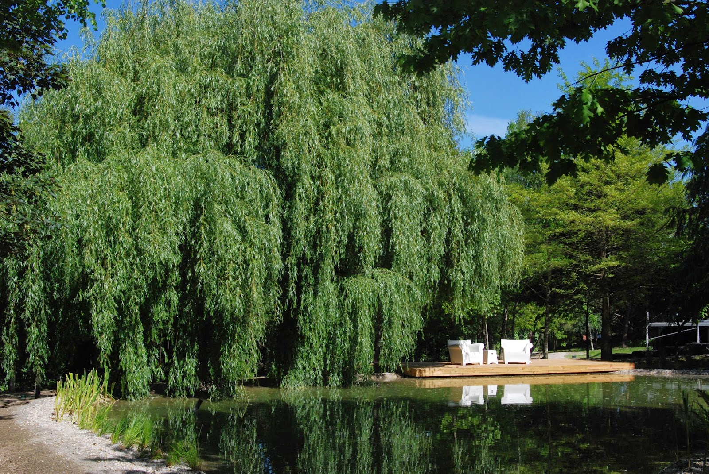
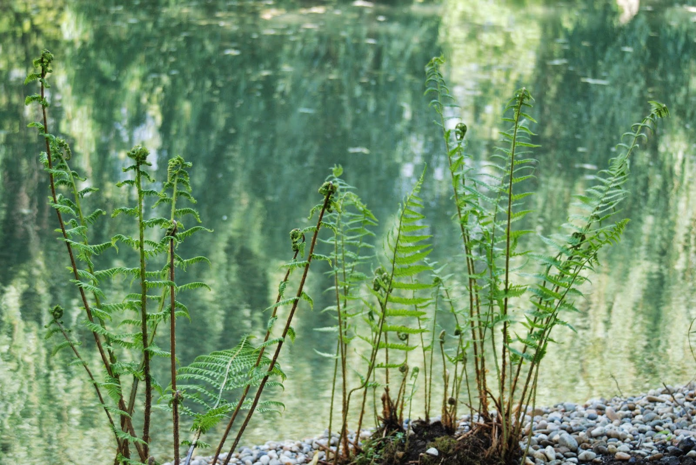
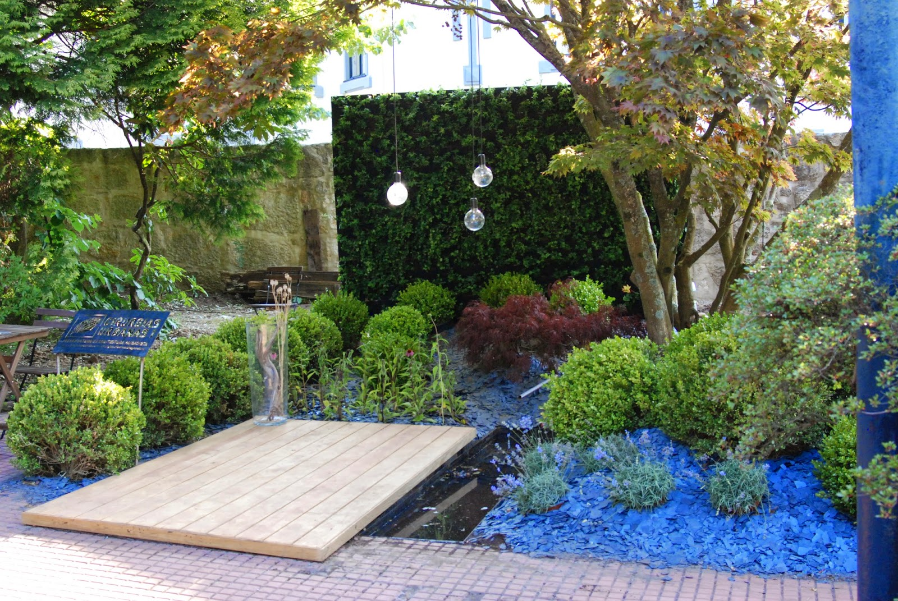
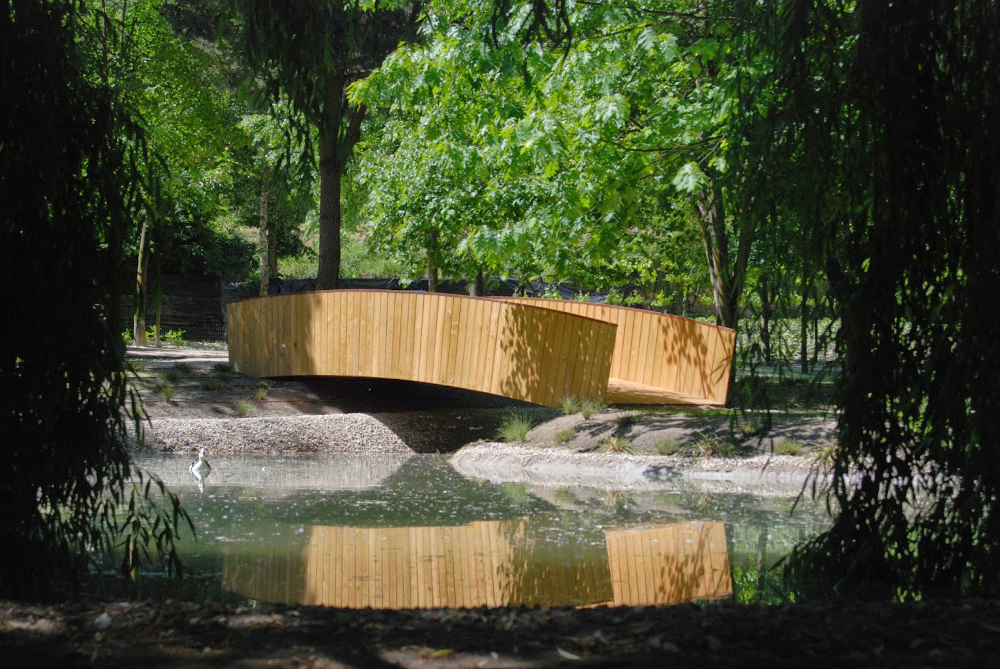

Cirurgias Urbanas I · Porto
Árvores.
Paisagem.
Espaço para viver.
Arboricultura e arquitetura paisagista. Projeto, execução e cuidado de espaços exteriores.
Da árvore
à paisagem.
A Cirurgias Urbanas I reúne arboricultura e arquitetura paisagista: diagnóstico e manutenção de árvores, projeto e execução de espaços exteriores. O arquivo apresentado nesta demonstração reúne projetos publicados em 2014.
Por onde
quer começar?
Escolha a área de trabalho e veja o que partilhar para preparar a conversa.
Arboricultura
Podas, plantações e abates com desmontagem de ramos e tronco.

Diagnóstico de árvores
Diagnósticos fitossanitários e avaliação de risco de queda.

Arquitetura paisagista
Projeto e execução de espaços exteriores.

Jardins e áreas arborizadas
Manutenção de jardins, desmatações e cuidados de áreas arborizadas.
Trabalhos
Uma referência
para a sua ideia.
Explore as imagens e escolha uma referência para explicar o que procura.
Ver trabalhos